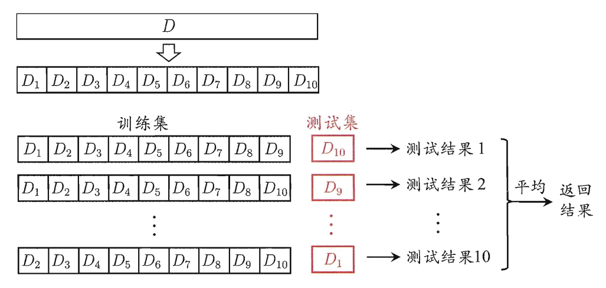
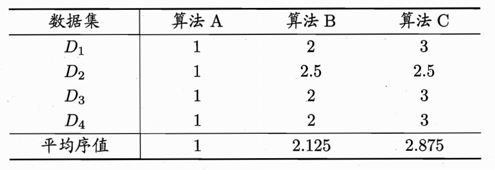

模型评估与选择
此为西瓜书的第二章。
经验误差与过拟合
error(误差)：学习器的实际预测输出与样本的真实输出之间的差值
- training error(训练误差)：在训练集上的误差
- empirical error(泛化误差)：在测试集的误差👍（我们更看重的是泛化误差）
overfitting(过拟合)：学习能力过强时，会将在广样本中不具备的一些特质作为训练样本训练出的东西，这些在更广的测试集中不适用，导致泛化能力下降。过拟合问题不可避免（P≠NP）
underfitting(欠拟合)
评估方法
通常为了在几种模型中选择出我们期待的最好的模型，我们需要测试模型的泛化能力，一般使用测试集的数据。为了能更公证地比较，测试集的数据需要独立同分布地采样，同时尽量避免出现在训练集中，有以下方法可以使用：
留出法(hold-out)
将数据集D划分为两个互斥的集合，一个作为训练集S，一个作为测试集T。需要注意：
- 训练/测试集的划分要尽可能保持数据分布的一致性。即如果S中正样本占50%，则T中也要使正样本比例接近50%
- 若S中包含大多的样本，则测试集的数据过少（甚至只有一个的话）那测出来的数据极不稳定；反之若T中样本过多也是同样的道理，会导致学习的模型不够完善。目前这个问题没有解决办法，一般的方式是2/3~4/5的样本用于训练
交叉验证法(cross validation)
“p次k折交叉验证”指的是对于样本集，我们使用p中不同的划分方式，每次将样本集划分为数量相等的k份，然后每次用k-1份作为训练集训练，剩下的一份作为测试集，这样下来总过求p×k次的平均值作为结果来判断。如下图所示：
注意图中只展示了一次划分。特殊的，当k和样本的数量一致时，交叉验证法退化为留一法(Leave-One-Out)，LOO方法在数据较多时计算量过大。
自助法(bootstrapping)
前面的方法在训练时因为需要拿出一部分作为测试集，因此训练样本的规模和全部样本的规模不一样，这里会产生偏差。这里的“自助法”以自助采样法(bootstrap sampling)为基础。
在数据集D中，有m个样本，现在我们想要用构造一个同样为m个样本的数据集D’，方式就是每次随机地从D中抽取一个样本放入D’中，放入后将这个样本放回去以保证下次依旧有机会再抽到。最后我们使用D’来做训练，而测试集是D-D’（即D中没有在D’中出现过的）。这里估计一下这个测试集大概的大小，即样本在m次采样中始终不被采到的概率:
$$
\lim_{ m\to \infty } (1-\frac 1m)^{ m } = \frac 1e \approx 0.368
$$
自助法在数据集较小、难以有效划分训练/测试集时很有用，对集成学习[1]等有很大的好处，但是其产生的数据集改变了初始数据集的分布，会引入估计偏差。
调参与最终模型
调参比较苦💔，这里还提到一般我们在实际结果中的测试数据称为测试集，把训练数据划分为训练集和验证集（validation set）
性能度量
衡量模型泛化能力的评价标准。
回归任务中最常用的是“均方误差”：
$$
E(f;\mathcal D) = \int_{ x \rightarrow \mathcal D }{ (f(x)-y)^2p(x) }, { \rm d }x
$$
错误率与精度
分类问题中常用[3]：
$$
E(f;\mathcal D) = \int_{ x \rightarrow \mathcal D }{ \coprod (f(x)-y)^2p(x) }, { \rm d }x
$$
查准率、查全率与F1
根据样例真实类别和预测类别的组合可以分为以下四个：TP(真正例)，FN(假反例)，FP(假正例)，TN(真反例)
| 预测结果 | ||
|---|---|---|
| 真实情况 | 正例 | 反例 |
| 正例 | TP(真正例) | FN(假反例) |
| 反例 | FP(假正例) | TN(真反例) |
其中，查准率P:
$$
P=\frac {TP}{TP+FP}
$$
代表的含义是在我预测为正的样例中，有多少是真的为正。查全率：
$$
R=\frac {TP}{TP+FN}
$$
代表真正的正例有多少被预测为正例。通常来讲，这两个指标是矛盾的，一个越大，另一个越小。用P-R曲线表示如下：
如果一个学习模型的P-R曲线可以“包住”另一条，则其性能更好，图中A性能比C好，但是这里无法估测AB的性能，在这种情况下可以用查准率=查全率时候的值作为比较依据，即图中红色的虚线所交点——平衡点(BEP)。但BEP还是过于简化，在实际应用中，我们对查全率和查准率的偏好可能是不一样的，用$\beta$代表查全率对查准率的相对重要性，则有如下指标：
$$
F_{\beta} = \frac {(1+\beta^2)\times P \times R}{(\beta^2 \times P)+R}
$$
特殊的，当$\beta$=1时，为标准的$F_1$。
当我们在分类问题中，计算了多次结果，有二分类混淆矩阵时，我们希望求得一个全局的值，有两种方式：
- 宏查全率/查准率/$F_1$：先计算出分别的这几个指标，再求平均值
- 微查全率/查准率/$F_1$：先计算值的平均，再计算指标[2]
ROC与AUC
一般情况下，对于分类问题，我们很可能是计算出一个介于0和1之间值，然后再给一个阈值(threshold)，通过比较结果值和阈值间的大小关系来判定分类。如果对数据结果进行排序，那么选择的这个截断点的不同会导致最后分类的查全率和查准率不同。实际上对模型能力的评估可以化为对结果排序准确度的评估，这里称作ROC(受试者工作特征)[4]。它的纵轴是“真正例率”，横轴是“假正例率”，其中纵轴的表达式和查全率一致，横轴表达式如下：
$$
FPR = \frac {FP}{TN+FP}
$$
表达的是所有反例中错预测为正例的比率。作出ROC图如下：
比较性能除了通过曲线的“包住”关系外，还可以通过计算面积得到AUC。表达式如下：
$$
AUC = \frac 12 \sum_{i=1}^{m-1}(x_{i+1}-x_i)(y_i+y_{i+1})
$$
AUC是评估排序质量的值，与排序的误差紧密相关，考虑排序损失(loss)：
$$
\mathcal l_{rank} = \frac {1}{m^+m^-} \sum_{x^+ \in D^+} \sum_{x^- \in D^-} (\coprod (f(x^+) < f(x^-))+\frac 12 \coprod(f(x^+)=f(x^-)))
$$
这两个值之间的关系为：$AUC = 1-l_{rank}$
代价敏感错误率与代价曲线
在之前的计算中，将正例预测为反例和将反例预测为正例的代价是一样的，但是在实际场景中，这两种错误的代价会有偏重。因此这里设立代价矩阵，$cost_{10}$就是将第一类例子预测为第0类例子的代价。在非均等代价下，ROC曲线不能直接反映出学习器的期望总体代价[5]，而“代价曲线”(cost curve)则可以达到目的。横轴为正例概率代价：
$$
P(+)cost = \frac {p \times cost_{ 01 } }{p \times cost_{01} + (1-p) \times cost_{01} }
$$
纵轴为取值为[0,1]的归一化代价[6]：
$$
cost_{norm} = \frac {FNR \times p \times cost_{01} + FPR \times (1-p) \times cost_{01} }{p \times cost_{01} +(1-p) \times cost_{01}}
$$
其中$p$为样例为正的概率，$FNR = 1-TPR$为假反例率。ROC中每一个点可以对应一条代价曲线，线段下的面积代表了该条件下的期望总体代价，如果将ROC每一个点的代价曲线都画出来，他们的下界围成的面积是在所有条件下学习器的期望总体代价，如下图所示：
比较检验
主要使用统计假设检验的知识（hypothesis test），基础为概率论知识（❗这里的概率论知识多起来了，需要补充），因为我们能够得到的是测试集上的结果，但想要的其实是泛化能力，即模型总的指标，这个指标无法直接得到，但是我们可以用统计的知识给出这个指标为多少值的可行度（置信度，置信区间），这里我们就先主要考虑错误率指标$\epsilon$
假设检验
假设检验的思想是，我对实际的错误率$\epsilon$假设一个值的范围，如$\epsilon \leq \epsilon_0$，然后需要判断是否能在置信度为$1-\alpha$的条件下相信这个假设。具体应用里可能有二项分布，t分布等。假设检验概率论基础
交叉验证t检验
对比两个学习器之间的性能差异，可以通过比较他们的错误率，如果错误率十分相似，那可以认为他们的性能是差不多的，如果不能认为相似的话，平均错误率小的更优。在具体使用时，一般每个学习器都会做k折交叉验证，我们对每次交叉验证时的一对错误率做假设检验，看他们的差值是否在一定的置信度下能够是近似为0的。即求$\Delta_i = \epsilon_i^A- \epsilon_i^B$，得到$\Delta_1,\Delta_2,…,\Delta_k$后，计算出均值和方差，在显著度$\alpha$下，若变量：
$$
\tau_T = |\frac {\sqrt k \mu}{\sigma}|
$$
小于临界值$t_{\alpha/2,k-1}$则假设不能被拒绝。
但在实际操作时，由于k折方法在选取数据时可能存在两次之间抽取到了同样的数据，因此测试错误率并不完全独立，为了缓解这一问题，可以采用$5 \times 2$交叉验证，即5次2折交叉验证。对于两个学习器A，B，每次会产生两对错误率，计算差值得到第一折的$\Delta_i^1$和第二折的$\Delta_i^2$，为了缓解测试错误率的非独立性[7]，我们对每次交叉验证计算$\mu = 0.5(\Delta_1^1+\Delta_1^2)$和方差$\sigma_i^2 = (\Delta_i^1-\frac {\Delta_i^1+\Delta_i^2}{2})^2+(\Delta_i^2-\frac {\Delta_i^1+\Delta_i^2}{2})^2$，变量：
$$
\tau_t = \frac {\mu}{\sqrt{0.2 \sum_{i=1}^5\sigma_i^2} }
$$
服从自由度为5的$t$分布，其双边检验的临界值$t_{\alpha/2,5}$。
McNemar检验
二分类问题中，比较学习器A和学习器B之间的关系，可以得到两者都正确，两者都错误，一个正确和一个错误的样本数，若性能相同，则一个正确一个错误的样本数$e_{01} = e_{10}$，则对于变量$|e_{01}=e_{10}|$应当服从正态分布，McNemar检验考虑变量：
$$
\tau_{\chi^2} = \frac {(|e_{01}-e_{10}|-1)^2}{e_{10}+e_{01}}
$$
服从自由度为1的$\chi^2$分布。（这里分子减1是由于他们的和很小，需要连续性校正[8]）
Friedman检验与Nemenyi后续检验
上面的交叉验证$t$检验和McNemar检验都是对两个学习器的性能的比较，但有时候我们需要对多个数据上多个算法的性能做比较，这时可以两两比较，但不够方便。Friedman检验是整体检验几个算法是否满足假设“所有算法性能相同”，而Nemenyi后续检验是给出两个算法性能接近的阈值，这样可以分别判断哪些算法是近似的，哪些有较大差异。
在Friedman算法中，我们首先对每个数据集上算法的表现做排名（相同名次的需要平分数值），得到下面的表格：
若算法性能相同，那么平均序值应当相等，，假设我们在N个数据集上比较k个算法，$r_i$表示第i个算法的平均序值，则变量：
$$
\tau_{\chi^2} = \frac {k-1}{k}.\frac {12N}{k^2-1}\sum_{i=1}^k(r_i-\frac {k+1}{2})^2
$$
在k和N都较大时，服从自由度为k-1的$\chi^2$分布，优化后一般使用变量：
$$
\tau_F = \frac {(N-1)\tau_{\chi^2}}{N(k-1)-\tau_{\chi^2}}
$$
服从自由度为k-1和(k-1)(N-1)的$F$分布。
在后续Nemenyi检验中，计算这个平均序值差别的临界阈值：
$$
CD = q_\alpha \sqrt{\frac {k(k+1)}{6N}}
$$
可以用下图比较直观的说明其含义，A>B>C，但其中AB,BC差异都不大，有重叠部分，但是AC差异大认为性能不同：
偏差与方差
泛化误差可以做如下分解：
$$
E(f;D) = bias^2(x)+var(x)+\varepsilon^2
$$
其中第一项偏差代表了模型的拟合能力，第二项方差代表了模型抗扰动的能力，第三项是噪声代表了模型的训练难度。其中偏差和方差是有冲突的：
习题
2.3 无直接联系（之前我对BEP的理解出现误区，列了个公式让查全率=查准率然后去推导出FP=FN这个结论，这个方式是不可行的，因为BEP曲线对于分类问题的阈值是变化的，而错误率是在阈值一定后计算的，两者无法相比）。
2.6 接着2.3回答，ROC曲线上的每个点可以对于一个错误率。
2.8 第一个方式容易受特殊点的影响，但计算相对简单
后续扩展
[1] 集成学习
[2] 在不同场景的应用有什么不同
[3] 这里$\coprod$表示指示函数，成立是为1，不成立为0
[4] P-R图和ROC曲线的不同：一个表明我们对查全率和查准率的倾向性（希望综合的考虑），一个是对排序性能的判断（前面相当于对应截断点的选择）
[5] 均等条件下，ROC曲线可以反映出期望？
[6] 归一化的定义，同时对这个公式的理解不太透
[7] 这样为什么能缓解独立性
[8] 不是很懂连续性校正
碎碎念
非自然死亡，很喜欢这部剧，因为讨论的社会问题有价值，同时我对悬疑没有抗拒力！
“有工夫绝望的话，还不如吃点好吃的去睡觉呢!”🍕
”梦想什么的，用不着那么夸张的东西吧，有个目标就行了。目标吗?比如，发了工资要买什么，或者下次休假去哪玩，又或者为了谁而工作。“
”世道如何，是看自己如何处世吧。“
写完这里，又开始想中午吃什么了…..🐷